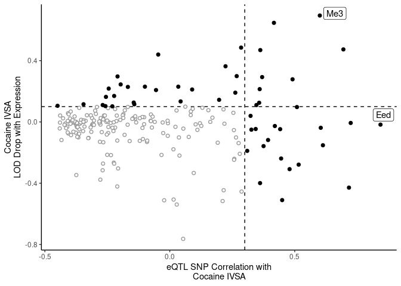
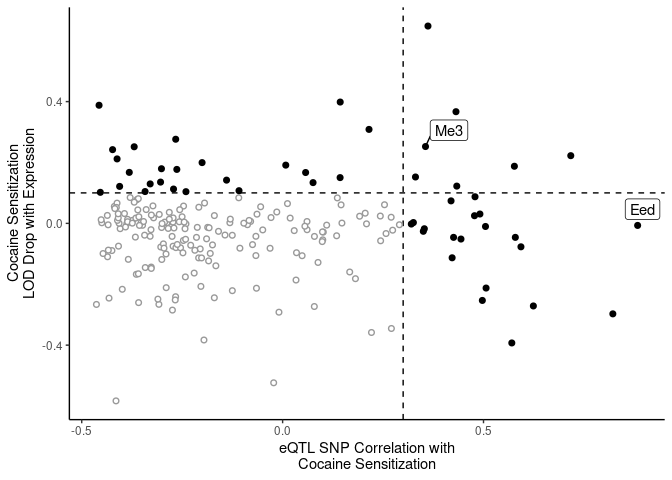
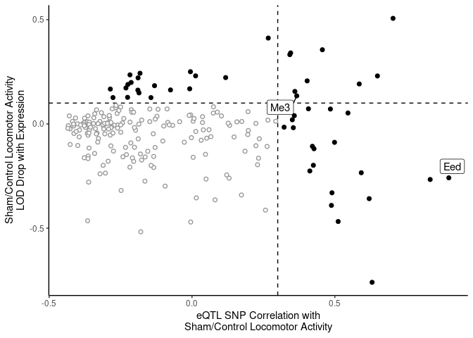
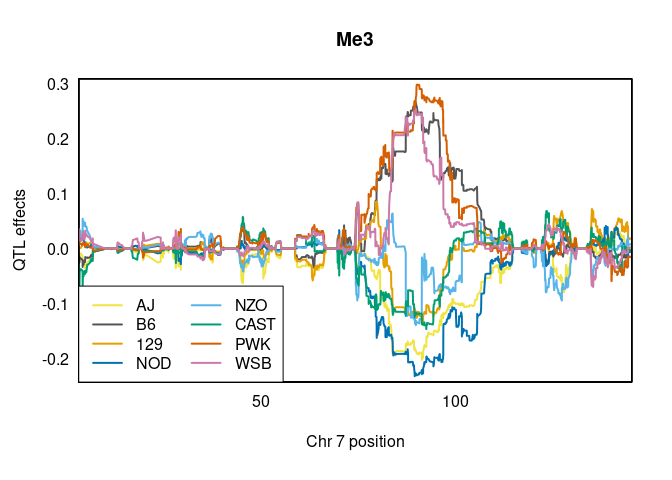
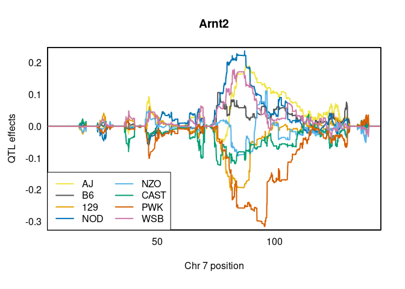
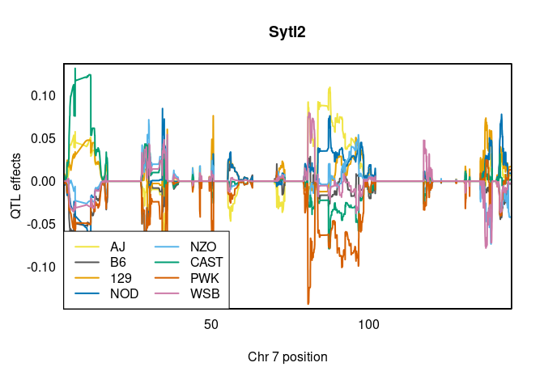
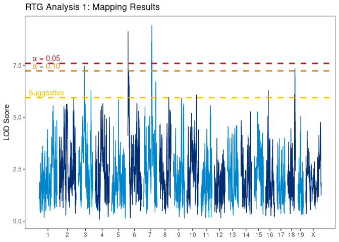
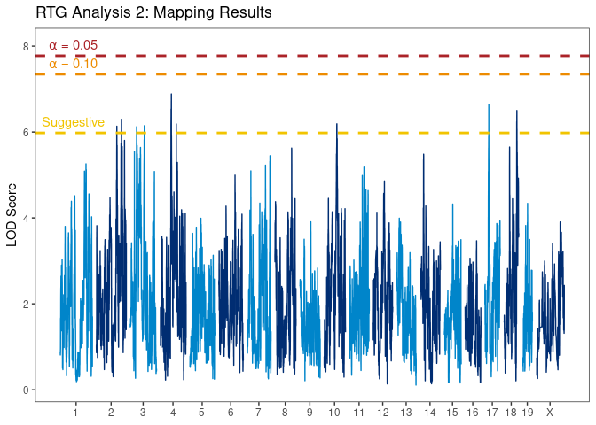
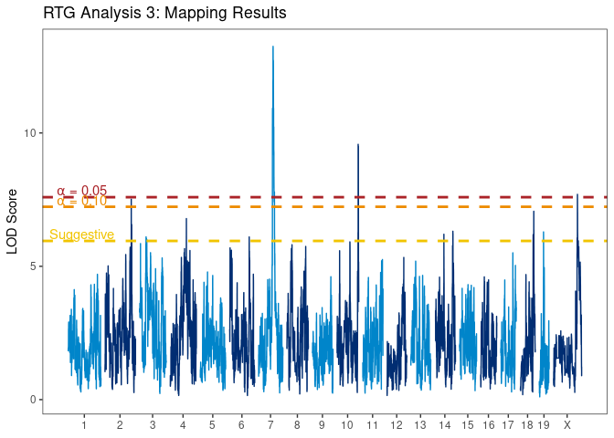
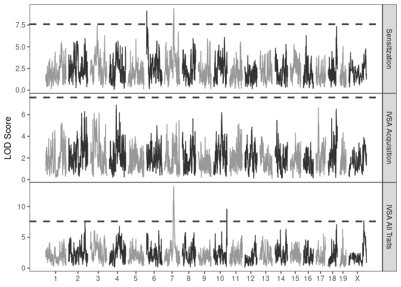

Last updated: 2023-11-28
Checks: 7 0
Knit directory: rta/
This reproducible R Markdown analysis was created with workflowr (version 1.7.0). The Checks tab describes the reproducibility checks that were applied when the results were created. The Past versions tab lists the development history.
Great! Since the R Markdown file has been committed to the Git repository, you know the exact version of the code that produced these results.
Great job! The global environment was empty. Objects defined in the global environment can affect the analysis in your R Markdown file in unknown ways. For reproduciblity it’s best to always run the code in an empty environment.
The command set.seed(20200501) was run prior to running
the code in the R Markdown file. Setting a seed ensures that any results
that rely on randomness, e.g. subsampling or permutations, are
reproducible.
Great job! Recording the operating system, R version, and package versions is critical for reproducibility.
Nice! There were no cached chunks for this analysis, so you can be confident that you successfully produced the results during this run.
Great job! Using relative paths to the files within your workflowr project makes it easier to run your code on other machines.
Great! You are using Git for version control. Tracking code development and connecting the code version to the results is critical for reproducibility.
The results in this page were generated with repository version b37c551. See the Past versions tab to see a history of the changes made to the R Markdown and HTML files.
Note that you need to be careful to ensure that all relevant files for
the analysis have been committed to Git prior to generating the results
(you can use wflow_publish or
wflow_git_commit). workflowr only checks the R Markdown
file, but you know if there are other scripts or data files that it
depends on. Below is the status of the Git repository when the results
were generated:
Ignored files:
Ignored: .Rhistory
Ignored: .Rproj.user/
Ignored: analysis/figure/
Ignored: code/.Rapp.history
Ignored: data/.Rhistory
Ignored: data/RDS/
Ignored: run/
Untracked files:
Untracked: LICENSE
Untracked: Rplot.pdf
Untracked: SENSI_chr7_snps.R
Untracked: Untitled.R
Untracked: analysis/17_mapping_interpretation_old.Rmd
Untracked: analysis/temp.txt
Untracked: code/DO_IVSA_SALINE_pleiotropy.R
Untracked: code/DO_IVSA_SENS_pleiotropy.R
Untracked: code/DO_SENS_SALINE_pleiotropy.R
Untracked: code/DO_eQTL_perms.R
Untracked: code/DO_eQTL_score_calc.R
Untracked: code/SENSI_chr7_snps.R
Untracked: code/STAR_RSEM_416.sh
Untracked: code/eQTL_plotting_DO_striatum_416.R
Untracked: code/ggplot_pub_themes.R
Untracked: code/pleitropy_analysis.sbatch
Untracked: code/pleitropy_saline_analysis.sbatch
Untracked: code/pleitropy_sensi_saline_analysis.sbatch
Untracked: code/rta_mapping_figure_leftover.R
Untracked: data/20_elastic_mv_results.csv
Untracked: data/20_elasticnet_predictions.RDS
Untracked: data/DO_416_DGEList.RDS
Untracked: data/DO_416_DGEList_unfiltered (michael.saul@jax.org 2).RDS
Untracked: data/DO_416_DGEList_unfiltered (michael.saul@jax.org 3).RDS
Untracked: data/DO_416_DGEList_unfiltered (michael.saul@jax.org 4).RDS
Untracked: data/DO_416_DGEList_unfiltered (michael.saul@jax.org).RDS
Untracked: data/DO_416_DGEList_unfiltered.RDS
Untracked: data/DO_416_ERCC_DGEList.RDS
Untracked: data/DO_416_ERCC_cpm.RDS
Untracked: data/DO_416_normrt.RDS
Untracked: data/DO_416_pheno.RDS
Untracked: data/DO_416_pheno_allgenes.RDS
Untracked: data/DO_416_voom (michael.saul@jax.org).RDS
Untracked: data/DO_416_voom.RDS
Untracked: data/DO_416_voom_allgenes (michael.saul@jax.org 2).RDS
Untracked: data/DO_416_voom_allgenes (michael.saul@jax.org).RDS
Untracked: data/DO_416_voom_allgenes.RDS
Untracked: data/DO_416_voom_cpresiduals.RDS
Untracked: data/DO_AQ_active_CoV_toptable_annotated.RDS
Untracked: data/DO_AQ_lever_ratio_toptable_annotated.RDS
Untracked: data/DO_AQ_mean_inf_toptable_annotated.RDS
Untracked: data/DO_AQ_rate_toptable_annotated.RDS
Untracked: data/DO_IVSA_SENS_pleio_lods.RDS
Untracked: data/DO_IVSA_SENS_pleio_pvl.RDS
Untracked: data/DO_IVSA_acquisition_cancor_df.RDS
Untracked: data/DO_IVSA_acquisition_logit_df.RDS
Untracked: data/DO_IVSA_acquisition_logit_glm.RDS
Untracked: data/DO_IVSA_all_cancor_df.RDS
Untracked: data/DO_IVSA_data.RDS
Untracked: data/DO_IVSA_novelty_cancor_ALL.RDS
Untracked: data/DO_IVSA_novelty_cancor_AQ.RDS
Untracked: data/DO_IVSA_novelty_data.RDS
Untracked: data/DO_IVSA_prediction_ACQUISITION_logit.RDS
Untracked: data/DO_IVSA_prediction_ACQUISITION_logit_2021-01-04.RDS
Untracked: data/DO_IVSA_prediction_ALL_cancor.RDS
Untracked: data/DO_IVSA_prediction_ALL_cancor_2021-01-04.RDS
Untracked: data/DO_IVSA_prediction_ALL_cancor_old.RDS
Untracked: data/DO_IVSA_prediction_AQ_cancor.RDS
Untracked: data/DO_IVSA_prediction_AQ_cancor_2021-01-04.RDS
Untracked: data/DO_IVSA_prediction_a1_ACQUISITION_logit.RDS
Untracked: data/DO_IVSA_prediction_a2_AQ_cancor.RDS
Untracked: data/DO_IVSA_prediction_a3_ALL_cancor.RDS
Untracked: data/DO_IVSA_prediction_a4_male_ALL_cancor.RDS
Untracked: data/DO_IVSA_prediction_a5_female_ALL_cancor.RDS
Untracked: data/DO_IVSA_raw_data.RDS
Untracked: data/DO_IVSA_transformed_data.RDS
Untracked: data/DO_LIMS_data.RDS
Untracked: data/DO_RTG_a1_new.qtl.RData
Untracked: data/DO_RTG_a1_new_1000x.qtlpermu.RData
Untracked: data/DO_RTG_a1_new_mapping_1000x.RData
Untracked: data/DO_RTG_a2_new.qtl.RData
Untracked: data/DO_RTG_a2_new_1000x.qtlpermu.RData
Untracked: data/DO_RTG_a2_new_mapping_1000x.RData
Untracked: data/DO_RTG_a3_new.qtl.RData
Untracked: data/DO_RTG_a3_new_1000x.qtlpermu.RData
Untracked: data/DO_RTG_a3_new_mapping_1000x_01.RData
Untracked: data/DO_RTG_a3_new_mapping_1000x_02.RData
Untracked: data/DO_RTG_a4_new.qtl.RData
Untracked: data/DO_RTG_a5_new.qtl.RData
Untracked: data/DO_RTG_elasticnet_new.qtl.RData
Untracked: data/DO_RTG_elasticnet_new_mapping_1000x.RData
Untracked: data/DO_RTG_project_df_for_mapping.RDS
Untracked: data/DO_RTG_project_df_for_mapping_2020-11-06.RDS
Untracked: data/DO_RTG_project_df_for_mapping_a2.RDS
Untracked: data/DO_RTG_project_df_for_mapping_sexspecific.RDS
Untracked: data/DO_cocaine_measures_data.RDS
Untracked: data/DO_demographic_data_df.RDS
Untracked: data/DO_eigengene_significance.RDS
Untracked: data/DO_eigengenes.RDS
Untracked: data/DO_elasticnet_GEX_pvalue_histograms.RData
Untracked: data/DO_highcor_cpresiduals_datatable.RDS
Untracked: data/DO_holeboard_data_df.RDS
Untracked: data/DO_holeboard_summarized.RDS
Untracked: data/DO_lightdark_data_df.RDS
Untracked: data/DO_mQTL_peaks.RDS
Untracked: data/DO_mQTL_scan1s.RDS
Untracked: data/DO_module_membership.RDS
Untracked: data/DO_novelplace_data_df.RDS
Untracked: data/DO_novelty_COC_cancor.RDS
Untracked: data/DO_novelty_SAL_cancor.RDS
Untracked: data/DO_novelty_data.RDS
Untracked: data/DO_novelty_response_data.RDS
Untracked: data/DO_novelty_response_data_for_RTG.RDS
Untracked: data/DO_novelty_response_data_with_transform.csv
Untracked: data/DO_novelty_saline_cocaine_cancor.RDS
Untracked: data/DO_openfield_data_df.RDS
Untracked: data/DO_paraclique_data.el
Untracked: data/DO_paraclique_eigengenes.RDS
Untracked: data/DO_paraclique_significance_elasticnet.RDS
Untracked: data/DO_paracliques.RDS
Untracked: data/DO_paracliques_significance.RDS
Untracked: data/DO_ploidy_calls.RDS
Untracked: data/DO_pmap.RDS
Untracked: data/DO_pvalue_histograms.RData
Untracked: data/DO_rtg_a1_toptable_annotated.RDS
Untracked: data/DO_rtg_a2_toptable_annotated.RDS
Untracked: data/DO_rtg_a3_toptable_annotated.RDS
Untracked: data/DO_rtg_m1_toptable_annotated.RDS
Untracked: data/DO_rtg_m2_toptable_annotated.RDS
Untracked: data/DO_rtg_m3_toptable_annotated.RDS
Untracked: data/DO_saline.qtl.RData
Untracked: data/DO_saline_measures_data.RDS
Untracked: data/DO_sensi_cocaine.qtl.RData
Untracked: data/DO_str_2016_eQTL.RData
Untracked: data/DO_str_2016_gm4qtl2.zip
Untracked: data/DO_str_2016_gm4qtl2_intensities.fst
Untracked: data/DO_voom_cpresiduals_NArm.RDS
Untracked: data/DO_wgcna.RDS
Untracked: data/IVSA_RTG_a3_blup.pdf
Untracked: data/IVSA_h2_2019-11-18.tsv
Untracked: data/IVSA_metadata_sheet.RDS
Untracked: data/ME16_edges.tsv
Untracked: data/Mus_musculus.GRCm38.94.parsed.RDS
Untracked: data/Paraclique_19_MF_AMIGO.txt
Untracked: data/RTG_QTL_peaks.RDS
Untracked: data/RTG_figure.RDS
Untracked: data/SENSI_chr7_snps.RData
Untracked: data/SENS_RTG/
Untracked: data/Tyr2_genotypes.RDS
Untracked: data/Tyr_genotypes.RDS
Untracked: data/blup_chr7_DO_RTG_a3.RDS
Untracked: data/cc_variants/
Untracked: data/chr18_QTL_results.RDS
Untracked: data/chr4_QTL_results.RDS
Untracked: data/chr7_a3_QTL_results.RDS
Untracked: data/cis/
Untracked: data/eQTL_annotated_peaks.RDS
Untracked: data/eQTL_plots.RData
Untracked: data/figures/
Untracked: data/founders_key/
Untracked: data/gigamuga/
Untracked: data/gwas/
Untracked: data/info/
Untracked: data/m2G.a2.RTG.chr4snp.RData
Untracked: data/mapping/
Untracked: data/mapping_from_hao/
Untracked: data/mpd_measures_saline.txt
Untracked: data/mpd_measures_saline_cocaine.txt
Untracked: data/perms/
Untracked: data/qtl2/
Untracked: data/raw/
Untracked: data/resources/
Untracked: data/tads_loops/
Untracked: data/transcripts/
Untracked: data/variants/
Untracked: logs/
Untracked: new_RTG_a3.jpeg
Untracked: output/DO_module_membership.tsv
Untracked: output/DO_paraclique_df.tsv
Untracked: output/RDS/
Untracked: output/RTG_out/
Untracked: output/docs_backup_2020-07-30.tar.gz
Untracked: output/elastic_net_out/
Untracked: output/mapping_figure.pdf
Untracked: output/mapping_plot.pdf
Untracked: output/mediation_all_rta_figure.pdf
Untracked: output/mediation_all_rta_figure_with_eed.pdf
Untracked: rstudio_rta.sif
Untracked: singularity/
Untracked: tmp/
Untracked: var/
Unstaged changes:
Deleted: .Rprofile
Modified: .gitignore
Modified: README.md
Modified: analysis/42_RTG_mapping.Rmd
Modified: analysis/_site.yml
Note that any generated files, e.g. HTML, png, CSS, etc., are not included in this status report because it is ok for generated content to have uncommitted changes.
These are the previous versions of the repository in which changes were
made to the R Markdown
(analysis/17_mapping_interpretation.Rmd) and HTML
(docs/17_mapping_interpretation.html) files. If you’ve
configured a remote Git repository (see ?wflow_git_remote),
click on the hyperlinks in the table below to view the files as they
were in that past version.
| File | Version | Author | Date | Message |
|---|---|---|---|---|
| Rmd | b37c551 | Michael C. Saul | 2023-11-28 | Committing most recent changes (adding new plots) |
| html | aa52960 | Michael C. Saul | 2022-03-12 | Build site. |
| Rmd | a9a19d5 | Michael C. Saul | 2022-03-11 | Adding in new sensitization to cocaine data |
| html | 2485d7d | Michael C. Saul | 2021-12-15 | Build site. |
| Rmd | 78e83fe | Michael C. Saul | 2021-12-14 | Committing for Sumner and integrating new analysis |
| Rmd | 973cb1c | Michael C. Saul | 2021-12-09 | Recommitting for Sumner plus adding new analyses |
| html | 2e38c65 | Michael C. Saul | 2020-07-30 | Rolling back to working version. |
| html | 1eb2885 | Michael C. Saul | 2020-07-21 | Build site. |
| Rmd | 34bb611 | Michael C. Saul | 2020-07-21 | Committing table of QTL results |
| html | c86ee90 | Michael C. Saul | 2020-07-20 | Build site. |
| Rmd | 0702711 | Michael C. Saul | 2020-07-20 | Committed modifications to mapping analyses figures and fix to chr18 mediation analysis |
| html | 9b43495 | Michael C. Saul | 2020-07-19 | Build site. |
| Rmd | 168cb84 | Michael C. Saul | 2020-07-19 | Committing chr18 peak analysis |
| html | da1922f | Michael C. Saul | 2020-07-17 | Build site. |
| Rmd | 61a60a0 | Michael C. Saul | 2020-07-17 | Committing mapping figure |
| html | f9c5856 | Michael C. Saul | 2020-07-16 | Build site. |
| Rmd | 322facd | Michael C. Saul | 2020-07-16 | Committing work on variants that might contribute to differences in TAD boundary |
| html | bf1ce2e | Michael C. Saul | 2020-07-15 | Build site. |
| Rmd | b14409e | Michael C. Saul | 2020-07-15 | Commiting new plots with shared synteny |
| html | a6193f0 | Michael C. Saul | 2020-07-14 | Build site. |
| Rmd | 4944529 | Michael C. Saul | 2020-07-14 | workflowr::wflow_publish("./analysis/17_mapping_interpretation.Rmd") |
| html | 6fb042a | Michael C. Saul | 2020-07-13 | Build site. |
| Rmd | b6a22e2 | Michael C. Saul | 2020-07-13 | Re-committed information about discussion to fix plot order error |
| Rmd | 883b0eb | Michael C. Saul | 2020-07-13 | Re-committed information about discussion to fix plot order error |
| html | 3cafd1b | Michael C. Saul | 2020-07-13 | Build site. |
| Rmd | 9519172 | Michael C. Saul | 2020-07-13 | Committed information about discussion |
| html | 2a2643d | Michael C. Saul | 2020-07-13 | Build site. |
| Rmd | 497c8be | Michael C. Saul | 2020-07-13 | workflowr::wflow_publish("./analysis/17_mapping_interpretation.Rmd") |
| html | 601e3ff | Michael C. Saul | 2020-07-13 | Build site. |
| Rmd | 0b25f4e | Michael C. Saul | 2020-07-13 | Commit changes to images (corrected to use the knitr::include_graphics() |
| html | ae7f4f9 | Michael C. Saul | 2020-07-13 | Build site. |
| Rmd | 945f4e8 | Michael C. Saul | 2020-07-13 | Commit changes to images (as jpg, corrected file path) |
| html | 74a70db | Michael C. Saul | 2020-07-13 | Build site. |
| Rmd | 4296fe8 | Michael C. Saul | 2020-07-13 | Committing images |
| html | c52718d | Michael C. Saul | 2020-07-13 | Build site. |
| Rmd | 8986fb3 | Michael C. Saul | 2020-07-13 | Initial commit of QTL interpretation. |
This script is used to interpret the RTG mapping work results.
The goal of this analysis is to resolve these QTL mapping data to one (or a few) genes.
Calling R libraries necessary for this analysis.
library("tidyverse")── Attaching packages ─────────────────────────────────────── tidyverse 1.3.2 ──
✔ ggplot2 3.4.2 ✔ purrr 1.0.1
✔ tibble 3.2.1 ✔ dplyr 1.1.2
✔ tidyr 1.3.0 ✔ stringr 1.5.0
✔ readr 2.1.3 ✔ forcats 0.5.2
── Conflicts ────────────────────────────────────────── tidyverse_conflicts() ──
✖ dplyr::filter() masks stats::filter()
✖ dplyr::lag() masks stats::lag()library("ggplot2")
library("ggrepel")
library("biomaRt")
library("qtl2")
Attaching package: 'qtl2'
The following object is masked from 'package:readr':
read_csvlibrary("grid")
library("cowplot")
library("ggplotify")
library("data.table")
Attaching package: 'data.table'
The following objects are masked from 'package:dplyr':
between, first, last
The following object is masked from 'package:purrr':
transposelibrary("edgeR")Loading required package: limmalibrary("limma")source("./code/ggplot_pub_themes.R")Warning: The `size` argument of `element_line()` is deprecated as of ggplot2 3.4.0.
ℹ Please use the `linewidth` argument instead.
This warning is displayed once every 8 hours.
Call `lifecycle::last_lifecycle_warnings()` to see where this warning was
generated.norm_rank_transform() functionGetting a normal rank transformation function that can handle
NA values.
norm_rank_transform = function(x, c = (0)) {
stopifnot(is.numeric(x) & is.vector(x))
x_noNA = which(!is.na(x))
N = length(x_noNA)
x[x_noNA] = qnorm((rank(x[x_noNA], ties.method = "average") - c) / (N - (2 * c) + 1))
return(x)
}Importing data.
First, importing eQTL peaks.
# Importing significant eQTL results
DO_eQTL_results = readRDS("./data/eQTL_annotated_peaks.RDS")Next, importing SNP data from the interval around the chr7 QTL from Hao He.
load("./data/DO_RTG_a3_new_mapping_1000x_01.RData")
RTG_a3_chr7_SNPs = as.data.frame(m2.sigqtl.snps$RTG_a3[[2]]$lod)
RTG_a3_chr7_info = as.data.frame(m2.sigqtl.snps$RTG_a3[[2]]$snpinfo)
row.names(RTG_a3_chr7_info) = RTG_a3_chr7_info$snp_id
RTG_a3_chr7_SNPs = cbind(RTG_a3_chr7_info[row.names(RTG_a3_chr7_SNPs),], RTG_a3_chr7_SNPs)
rm(list = c("RTG_a3_chr7_info","m2.sigqtl.genes","m2.sigqtl.snps"))Loading sensi SNPs for SNP correlations.
load("./data/SENSI_chr7_snps.RData")
chr7_cocaine_snps_lod = as.data.frame(chr7_cocaine_snps$lod)
chr7_saline_snps_lod = as.data.frame(chr7_saline_snps$lod)Next, importing CC variants file (downloaded 2020-07-09). Creating a query function.
query_func = create_variant_query_func("./data/cc_variants/cc_variants.sqlite")Next, loading in the eQTL data
load("./data/DO_str_2016_eQTL.RData")
# DO_pheno = DO_str_2016_cross$pheno
DO_covar = DO_str_2016_cross$covar
DO_unfiltered_DGE = readRDS("./data/DO_416_DGEList_unfiltered.RDS")
DO_unfiltered_DGE = calcNormFactors(DO_unfiltered_DGE)
DO_pheno = t(voom(DO_unfiltered_DGE)$E)
rm(list = c("DO_unfiltered_DGE"))
DO_pheno = DO_pheno[gsub("^(\\d{4,5})_.*$","\\1",row.names(DO_covar)),]
row.names(DO_pheno) = row.names(DO_covar)
addcovar_mat = model.matrix(~ ngen + sex, data = DO_covar)[,-1]
addcovar_i = addcovar_mat
library("qtl2")
plot_eQTL_str_2016 = function(gene_i, n_cores = 9, label = gene_i, color = "darkblue") {
pheno_col_i = which(colnames(DO_pheno) == gene_i)
qtl_cis_i = scan1(genoprobs = DO_str_2016_aprobs,
pheno = DO_pheno[,pheno_col_i, drop = FALSE],
kinship = DO_str_2016_kinship,
addcovar = addcovar_i,
cores = n_cores)
return(plot_scan1(qtl_cis_i, map = DO_str_2016_cross$pmap, col = color, main = label))
}
plot_coefCC2 = function(x,
map,
columns = c("A","B","C","D","E","F","G","H"),
col = c("#F0E442", "#555555", "#E69F00", "#0072B2",
"#56B4E9", "#009E73", "#D55E00", "#CC79A7"),
labels = c("AJ", "B6", "129", "NOD",
"NZO", "CAST", "PWK", "WSB"),
legend = NULL,
...) {
if (length(columns) != length(labels)) {
stop("Column length different than label length")
} else if (length(which(columns %in% colnames(x))) != length(columns)) {
stop("Columns not in coefficient matrix")
} else if (length(col) != length(columns)) {
stop("Different number of colors to column length")
}
stopifnot(require("qtl2"))
x = x[,columns]
colnames(x) = labels
return(plot_coef(x = x, map = map, col = col, legend = legend, ...))
}
plot_BLUP_str_2016 = function(gene_i, chr_i, label = gene_i, n_cores = 9, legendpos = "bottomleft") {
pheno_col_i = which(colnames(DO_pheno) == gene_i)
blup_i = scan1blup(DO_str_2016_aprobs[,chr_i],
pheno = DO_pheno[,pheno_col_i, drop = FALSE],
kinship = DO_str_2016_kinship[[chr_i]],
addcovar = addcovar_i,
cores = n_cores)
return(plot_coefCC2(blup_i, map = DO_str_2016_cross$pmap, legend = legendpos, main = label, bgcolor = "white"))
}Next, loading the RTG_a3 data for mediation
analysis.
RTG_phenotypes = readRDS("./data/DO_RTG_project_df_for_mapping.RDS")Also loading the SENSI data for mediation analysis
SENSI_cocaine_sensi = readRDS("./data/DO_novelty_saline_cocaine_cancor.RDS")Next, loading CC/DO founders key.
cc_do_founders_key = readRDS("./data/founders_key/cc_do_founders_key.RDS")Next, loading in biomaRt and getting a key for
expression data.
# 10
# Getting biomaRt data
mm10_maRt = useMart(biomart = "ENSEMBL_MART_ENSEMBL",
host = "https://oct2018.archive.ensembl.org",
dataset = "mmusculus_gene_ensembl")
maRt_filter = "ensembl_gene_id"
maRt_attributes = c("ensembl_gene_id","mgi_symbol","mgi_description","chromosome_name","start_position","end_position","strand")
Mm_maRt = getBM(maRt_attributes, maRt_filter, colnames(DO_pheno), mm10_maRt)
# row.names(Mm_maRt) = Mm_maRt$ensembl_gene_id
Mm_maRt$start_position = Mm_maRt$start_position / 1e6
Mm_maRt$end_position = Mm_maRt$end_position / 1e6Finally, loading the RTG_a2, RTG_a3, and
SENS QTL results.
# Loading RTG a1
load("./data/DO_RTG_a1_new.qtl.RData")
RTG_a1_qtl = m2.qtl.out$RTG_a1
load("./data/DO_RTG_a1_new_1000x.qtlpermu.RData")
RTG_a1_perms = m2.permu$RTG_a1
# Loading RTG a2
load("./data/DO_RTG_a2_new.qtl.RData")
RTG_a2_qtl = m2.qtl.out$RTG_a2
load("./data/DO_RTG_a2_new_1000x.qtlpermu.RData")
RTG_a2_perms = m2.permu$RTG_a2
# Loading RTG a3
load("./data/DO_RTG_a3_new.qtl.RData")
RTG_a3_qtl = m2.qtl.out$RTG_a3
load("./data/DO_RTG_a3_new_1000x.qtlpermu.RData")
RTG_a3_perms = m2.permu$RTG_a3
# Loading SENS
load("./data/DO_sensi_cocaine.qtl.RData")
SENS_COC_qtl = m2.qtl.out$cocaine_novelty_cancor
# Loading SENSI Saline
load("./data/DO_saline.qtl.RData")
SENS_SAL_qtl = m2.qtl.out$saline_novelty_cancor
# Loading physical map
load("./output/RTG_out/gm_qc_pgmap.rdata")Identifying all genes within a 10 Mb window around the peaks.
# Getting thresholds
RTG_a1_permu_thresholds = quantile(RTG_a1_perms, probs = 1 - c(0, 0.01, 0.05, 0.10, 0.63, 1))
RTG_a1_suggestive = RTG_a1_permu_thresholds["37%"]
RTG_a1_ten_percent = RTG_a1_permu_thresholds["90%"]
RTG_a1_five_percent = RTG_a1_permu_thresholds["95%"]
RTG_a1_one_percent = RTG_a1_permu_thresholds["99%"]
RTG_a1_peaks_pos = find_peaks(RTG_a1_qtl,
map = pmap,
threshold = RTG_a1_permu_thresholds["37%"],
prob = 0.95)
RTG_a1_peaks_posRTG_a2_permu_thresholds = quantile(RTG_a2_perms, probs = 1 - c(0, 0.01, 0.05, 0.10, 0.63, 1))
RTG_a2_suggestive = RTG_a2_permu_thresholds["37%"]
RTG_a2_ten_percent = RTG_a2_permu_thresholds["90%"]
RTG_a2_five_percent = RTG_a2_permu_thresholds["95%"]
RTG_a2_one_percent = RTG_a2_permu_thresholds["99%"]
RTG_a2_peaks_pos = find_peaks(RTG_a2_qtl,
map = pmap,
threshold = RTG_a2_permu_thresholds["37%"],
prob = 0.95)
RTG_a2_peaks_posStarting with chr7.
RTG_a3_permu_thresholds = quantile(RTG_a3_perms, probs = 1 - c(0, 0.01, 0.05, 0.10, 0.63, 1))
RTG_a3_suggestive = RTG_a3_permu_thresholds["37%"]
RTG_a3_ten_percent = RTG_a3_permu_thresholds["90%"]
RTG_a3_five_percent = RTG_a3_permu_thresholds["95%"]
RTG_a3_one_percent = RTG_a3_permu_thresholds["99%"]
RTG_a3_peaks_pos = find_peaks(RTG_a3_qtl,
map = pmap,
threshold = RTG_a3_permu_thresholds["37%"],
prob = 0.95)
RTG_a3_peaks_posSENS_COC_peaks_pos = find_peaks(SENS_COC_qtl,
map = pmap,
threshold = RTG_a3_permu_thresholds["37%"],
prob = 0.95)
SENS_COC_peaks_posSENS_SAL_peaks_pos = find_peaks(SENS_SAL_qtl,
map = pmap,
threshold = RTG_a3_permu_thresholds["37%"],
prob = 0.95)
SENS_SAL_peaks_posRTG_a3_chr7_peak = RTG_a3_peaks_pos[which(RTG_a3_peaks_pos$chr == "7"),]
RTG_a3_chr7_peak_pos = RTG_a3_chr7_peak[,"pos"]
SENSI_cocaine_chr7_peak = SENS_COC_peaks_pos[which(SENS_COC_peaks_pos$chr == "7"),]
SENSI_cocaine_chr7_peak_pos = SENSI_cocaine_chr7_peak[,"pos"]
SENSI_saline_chr7_peak = SENS_SAL_peaks_pos[which(SENS_SAL_peaks_pos$chr == "7"),]
SENSI_saline_chr7_peak_pos = SENSI_saline_chr7_peak[,"pos"]
max_chr7_peak_pos = max(c(RTG_a3_chr7_peak_pos, SENSI_cocaine_chr7_peak_pos, SENSI_saline_chr7_peak_pos))
min_chr7_peak_pos = min(c(RTG_a3_chr7_peak_pos, SENSI_cocaine_chr7_peak_pos, SENSI_saline_chr7_peak_pos))
chr7_genes = Mm_maRt[which(Mm_maRt$chromosome_name == "7"),]
# Getting genes within 10 Mb of the peak
chr7_genes = chr7_genes[which(chr7_genes$start_position >= (min_chr7_peak_pos - 10) | chr7_genes$end_position >= (min_chr7_peak_pos - 10)),]
chr7_genes = chr7_genes[which(chr7_genes$start_position <= (max_chr7_peak_pos + 10) | chr7_genes$end_position <= (max_chr7_peak_pos + 10)),]Finding SNP associations for all of these genes and calculating
correlations with the RTG_a3 SNP associations. Starting
with chr4.
# Getting SNP range for the chr7 resuls
chr = "7"
start = min(RTG_a3_chr7_SNPs$pos)
end = max(RTG_a3_chr7_SNPs$pos)
chr7_pheno = DO_pheno[,which(colnames(DO_pheno) %in% chr7_genes$ensembl_gene_id)]
for (i in 1:ncol(chr7_pheno)) {
col_i = colnames(chr7_pheno)[i]
ranknorm_resid_i = norm_rank_transform(resid(lm(DO_pheno[,col_i] ~ as.numeric(DO_covar$choroid_plexus_covariate))))
chr7_pheno[,i] = ranknorm_resid_i[row.names(chr7_pheno)]
}
# Looping through to make eQTL results
for (i in 1:nrow(chr7_genes)) {
sig_gene_i = chr7_genes[i,"ensembl_gene_id"]
sig_label_i = chr7_genes[i,"mgi_symbol"]
pheno_col_i = which(colnames(chr7_pheno) == sig_gene_i)
assoc = scan1snps(genoprobs = DO_str_2016_aprobs[,chr],
map = DO_str_2016_cross$pmap,
pheno = chr7_pheno[,pheno_col_i, drop = FALSE],
kinship = DO_str_2016_kinship,
addcovar = addcovar_i,
query_func = query_func,
chr = chr,
start = start,
end = end,
keep_all_snps = TRUE)
if (exists("qtl_df")) {
qtl_df = cbind(qtl_df, as.data.frame(assoc$lod)[row.names(qtl_df),])
} else {
qtl_df = as.data.frame(assoc$lod)
}
colnames(qtl_df)[i] = sig_label_i
}
# colnames(qtl_df) = chr7_genes$mgi_symbol
qtl_df$RTG_a3 = RTG_a3_chr7_SNPs[row.names(qtl_df),"pheno1"]
qtl_df$SENSI_cocaine = chr7_cocaine_snps_lod[row.names(qtl_df),"pheno1"]
qtl_df$SENSI_saline = chr7_saline_snps_lod[row.names(qtl_df),"pheno1"]Calculating correlations between the RTG_a3,
SENSI_cocaine, and SENSI_saline SNP mapping
for chr7.
RTG_a3_cor = cor(qtl_df$RTG_a3,qtl_df[,chr7_genes$mgi_symbol],
use = "pairwise.complete.obs")
SENSI_cocaine_cor = cor(qtl_df$SENSI_cocaine,qtl_df[,chr7_genes$mgi_symbol],
use = "pairwise.complete.obs")
SENSI_saline_cor = cor(qtl_df$SENSI_saline,qtl_df[,chr7_genes$mgi_symbol],
use = "pairwise.complete.obs")
chr7_genes$cor_RTG_a3 = RTG_a3_cor[,as.character(chr7_genes$mgi_symbol)]
chr7_genes$cor_SENSI_cocaine = SENSI_cocaine_cor[,as.character(chr7_genes$mgi_symbol)]
chr7_genes$cor_SENSI_saline = SENSI_saline_cor[,as.character(chr7_genes$mgi_symbol)]Performing mediation analysis with RTG_a3 phenotype on
chr7 genes. Beginning with a plot of the RTG_a3 result on
the data with expression information.
# Getting phenotype matrices for IVSA, SENSI Cocaine, and SENSI Saline
RTG_a3_phenotype_mat = matrix(RTG_phenotypes[gsub("^(\\d{4,5})_.*$","\\1",row.names(chr7_pheno)),"RTG_a3"], ncol = 1)
row.names(RTG_a3_phenotype_mat) = row.names(chr7_pheno)
colnames(RTG_a3_phenotype_mat) = "RTG_a3"
SENSI_cocaine_phenotype_mat = matrix(SENSI_cocaine_sensi[gsub("^(\\d{4,5})_.*$","\\1",row.names(chr7_pheno)),"cocaine_novelty_cancor"], ncol = 1)
row.names(SENSI_cocaine_phenotype_mat) = row.names(chr7_pheno)
colnames(SENSI_cocaine_phenotype_mat) = "SENSI_cocaine"
SENSI_saline_phenotype_mat = matrix(SENSI_cocaine_sensi[gsub("^(\\d{4,5})_.*$","\\1",row.names(chr7_pheno)),"saline_novelty_cancor"], ncol = 1)
row.names(SENSI_saline_phenotype_mat) = row.names(chr7_pheno)
colnames(SENSI_saline_phenotype_mat) = "SENSI_saline"
# Mapping RTG_a3 on chromosome 7
qtl_RTG_a3_exprs = scan1(genoprobs = DO_str_2016_aprobs[,"7"],
pheno = RTG_a3_phenotype_mat[,"RTG_a3"],
kinship = DO_str_2016_kinship$`7`,
addcovar = addcovar_i,
cores = 9)
chr7_markers = DO_str_2016_cross$pmap$`7`
chr7_markers = chr7_markers[which(chr7_markers >= (RTG_a3_chr7_peak_pos - 5) &
chr7_markers <= (RTG_a3_chr7_peak_pos + 5))]
chr7_pheno1 = as.data.frame(qtl_RTG_a3_exprs)[names(chr7_markers),"pheno1"]
names(chr7_pheno1) = names(chr7_markers)
max_marker_RTG_a3 = names(chr7_pheno1[which(chr7_pheno1 == max(chr7_pheno1))])
max_marker_lod_RTG_a3 = chr7_pheno1[max_marker_RTG_a3]
# Mapping SENSI_cocaine on chromosome 7
qtl_SENSI_cocaine_exprs = scan1(genoprobs = DO_str_2016_aprobs[,"7"],
pheno = SENSI_cocaine_phenotype_mat[,"SENSI_cocaine"],
kinship = DO_str_2016_kinship$`7`,
addcovar = addcovar_i,
cores = 9)
chr7_markers = DO_str_2016_cross$pmap$`7`
chr7_markers = chr7_markers[which(chr7_markers >= (SENSI_cocaine_chr7_peak_pos - 5) &
chr7_markers <= (SENSI_cocaine_chr7_peak_pos + 5))]
chr7_pheno1 = as.data.frame(qtl_SENSI_cocaine_exprs)[names(chr7_markers),1]
names(chr7_pheno1) = names(chr7_markers)
max_marker_SENSI_cocaine = names(chr7_pheno1[which(chr7_pheno1 == max(chr7_pheno1))])
max_marker_lod_SENSI_cocaine = chr7_pheno1[max_marker_SENSI_cocaine]
# Mapping SENSI_saline on chromosome 7
qtl_SENSI_saline_exprs = scan1(genoprobs = DO_str_2016_aprobs[,"7"],
pheno = SENSI_saline_phenotype_mat[,"SENSI_saline"],
kinship = DO_str_2016_kinship$`7`,
addcovar = addcovar_i,
cores = 9)
chr7_markers = DO_str_2016_cross$pmap$`7`
chr7_markers = chr7_markers[which(chr7_markers >= (SENSI_saline_chr7_peak_pos - 5) &
chr7_markers <= (SENSI_saline_chr7_peak_pos + 5))]
chr7_pheno1 = as.data.frame(qtl_SENSI_saline_exprs)[names(chr7_markers),1]
names(chr7_pheno1) = names(chr7_markers)
max_marker_SENSI_saline = names(chr7_pheno1[which(chr7_pheno1 == max(chr7_pheno1))])
max_marker_lod_SENSI_saline = chr7_pheno1[max_marker_SENSI_saline]
# Doing mediation analysis: looking at LOD score drops
for (i in 1:nrow(chr7_genes)) {
sig_gene_i = chr7_genes[i,"ensembl_gene_id"]
sig_label_i = chr7_genes[i,"mgi_symbol"]
pheno_col_i = which(colnames(chr7_pheno) == sig_gene_i)
# RTG_a3
RTG_a3_scan_i = scan1(genoprobs = DO_str_2016_aprobs[,"7"],
pheno = RTG_a3_phenotype_mat[,"RTG_a3"],
kinship = DO_str_2016_kinship$`7`,
addcovar = cbind(addcovar_i,
chr7_pheno[,sig_gene_i]),
cores = 9)
max_marker_RTG_a3_lod_i = as.data.frame(RTG_a3_scan_i)[max_marker_RTG_a3,1]
if (exists("max_markers_RTG_a3")) {
max_markers_RTG_a3 = c(max_markers_RTG_a3, max_marker_RTG_a3_lod_i)
names(max_markers_RTG_a3)[i] = sig_label_i
} else {
max_markers_RTG_a3 = max_marker_RTG_a3_lod_i
names(max_markers_RTG_a3) = sig_label_i
}
# SENSI_cocaine
SENSI_cocaine_scan_i = scan1(genoprobs = DO_str_2016_aprobs[,"7"],
pheno = SENSI_cocaine_phenotype_mat[,"SENSI_cocaine"],
kinship = DO_str_2016_kinship$`7`,
addcovar = cbind(addcovar_i,
chr7_pheno[,sig_gene_i]),
cores = 9)
max_marker_SENSI_cocaine_lod_i = as.data.frame(SENSI_cocaine_scan_i)[max_marker_SENSI_cocaine,1]
if (exists("max_markers_SENSI_cocaine")) {
max_markers_SENSI_cocaine = c(max_markers_SENSI_cocaine, max_marker_SENSI_cocaine_lod_i)
names(max_markers_SENSI_cocaine)[i] = sig_label_i
} else {
max_markers_SENSI_cocaine = max_marker_SENSI_cocaine_lod_i
names(max_markers_SENSI_cocaine) = sig_label_i
}
# SENSI_saline
SENSI_saline_scan_i = scan1(genoprobs = DO_str_2016_aprobs[,"7"],
pheno = SENSI_saline_phenotype_mat[,"SENSI_saline"],
kinship = DO_str_2016_kinship$`7`,
addcovar = cbind(addcovar_i,
chr7_pheno[,sig_gene_i]),
cores = 9)
max_marker_SENSI_saline_lod_i = as.data.frame(SENSI_saline_scan_i)[max_marker_SENSI_saline,1]
if (exists("max_markers_SENSI_saline")) {
max_markers_SENSI_saline = c(max_markers_SENSI_saline, max_marker_SENSI_saline_lod_i)
names(max_markers_SENSI_saline)[i] = sig_label_i
} else {
max_markers_SENSI_saline = max_marker_SENSI_saline_lod_i
names(max_markers_SENSI_saline) = sig_label_i
}
}
chr7_genes$med_RTG_a3 = max_markers_RTG_a3[chr7_genes$mgi_symbol]
chr7_genes$med_SENSI_cocaine = max_markers_SENSI_cocaine[chr7_genes$mgi_symbol]
chr7_genes$med_SENSI_saline = max_markers_SENSI_saline[chr7_genes$mgi_symbol]
rm(list = ls(pattern = "^max_markers_"))
# Calculating a few variables that are useful for plotting
chr7_genes$RTG_a3_lod_drop = max_marker_lod_RTG_a3 - chr7_genes$med_RTG_a3
chr7_genes$SENSI_cocaine_lod_drop = max_marker_lod_SENSI_cocaine - chr7_genes$med_SENSI_cocaine
chr7_genes$SENSI_saline_lod_drop = max_marker_lod_SENSI_saline - chr7_genes$med_SENSI_saline
# Getting labels and colors and such.
chr7_genes$label_RTG_a3 = ifelse((chr7_genes$RTG_a3_lod_drop > 0.1) | (chr7_genes$cor_RTG_a3 > 0.3),
chr7_genes$mgi_symbol,"")
chr7_genes$color_RTG_a3 = ifelse(chr7_genes$label_RTG_a3 == "", "#666666", "#CC3333")
chr7_genes[which(chr7_genes$mgi_symbol == "Eed"),"label_RTG_a3"] = "Eed"
chr7_genes$label_SENSI_cocaine = ifelse((chr7_genes$SENSI_cocaine_lod_drop > 0.1) | (chr7_genes$cor_SENSI_cocaine > 0.3),
chr7_genes$mgi_symbol,"")
chr7_genes$color_SENSI_cocaine = ifelse(chr7_genes$label_SENSI_cocaine == "", "#666666", "#CC3333")
chr7_genes[which(chr7_genes$mgi_symbol == "Eed"),"label_SENSI_cocaine"] = "Eed"
chr7_genes$label_SENSI_saline = ifelse((chr7_genes$SENSI_saline_lod_drop > 0.1) | (chr7_genes$cor_SENSI_saline > 0.3),
chr7_genes$mgi_symbol,"")
chr7_genes$color_SENSI_saline = ifelse(chr7_genes$label_SENSI_saline == "", "#666666", "#CC3333")
chr7_genes[which(chr7_genes$mgi_symbol == "Eed"),"label_SENSI_saline"] = "Eed"
chr7_genes$in_exprs_set = chr7_genes$ensembl_gene_id %in% colnames(DO_str_2016_cross$pheno)
chr7_genes$label_all = ifelse(chr7_genes$mgi_symbol %in% c("Eed","Me3"),
chr7_genes$mgi_symbol, NA)Displaying correlations and mediation analysis (LOD score drops) with
the RTG_a3 SNP mapping.
# 20
chr7_genes[order(chr7_genes$RTG_a3_lod_drop, decreasing = TRUE),]Identifying genes extreme on both mediation analysis and
correlational analysis for RTG_a3 (IVSA all traits).
# Plotting mediation and SNP correlation variables with ggplot2 and ggrepel
chr7_eQTL_cor_med_plot = ggplot(data = chr7_genes[which(chr7_genes$in_exprs_set),], aes(x = cor_RTG_a3,
y = RTG_a3_lod_drop,
color = color_RTG_a3,
fill = color_RTG_a3,
label = label_all)) +
theme_classic() +
theme(legend.position = "none") +
geom_hline(yintercept = 0.1, linetype = "dashed") +
geom_vline(xintercept = 0.3, linetype = "dashed") +
geom_point(shape = 21, stroke = 0.75) +
scale_color_manual(values = c("#999999","#000000")) +
scale_fill_manual(values = c("#FFFFFF","#000000")) +
scale_size_manual(values = c(1,3)) +
geom_label_repel(aes(fill = NULL)) +
xlab("eQTL SNP Correlation with\nCocaine IVSA") +
ylab("Cocaine IVSA\nLOD Drop with Expression")
# Displaying plot
chr7_eQTL_cor_med_plotWarning: Removed 223 rows containing missing values (`geom_label_repel()`).
| Version | Author | Date |
|---|---|---|
| 2485d7d | Michael C. Saul | 2021-12-15 |
| 2e38c65 | Michael C. Saul | 2020-07-30 |
| 9b43495 | Michael C. Saul | 2020-07-19 |
| da1922f | Michael C. Saul | 2020-07-17 |
Identifying genes extreme on both mediation analysis and
correlational analysis for SENSI_cocaine.
# Plotting mediation and SNP correlation variables with ggplot2 and ggrepel
chr7_eQTL_cor_med_plot_SENSI_cocaine = ggplot(data = chr7_genes[which(chr7_genes$in_exprs_set),], aes(x = cor_SENSI_cocaine,
y = SENSI_cocaine_lod_drop,
color = color_SENSI_cocaine,
fill = color_SENSI_cocaine,
label = label_all)) +
theme_classic() +
theme(legend.position = "none") +
geom_hline(yintercept = 0.1, linetype = "dashed") +
geom_vline(xintercept = 0.3, linetype = "dashed") +
geom_point(shape = 21, stroke = 0.75) +
scale_color_manual(values = c("#999999","#000000")) +
scale_fill_manual(values = c("#FFFFFF","#000000")) +
scale_size_manual(values = c(1,3)) +
geom_label_repel(aes(fill = NULL)) +
xlab("eQTL SNP Correlation with\nCocaine Sensitization") +
ylab("Cocaine Sensitization\nLOD Drop with Expression")
# Displaying plot
chr7_eQTL_cor_med_plot_SENSI_cocaineWarning: Removed 223 rows containing missing values (`geom_label_repel()`).
| Version | Author | Date |
|---|---|---|
| 2e38c65 | Michael C. Saul | 2020-07-30 |
| 9b43495 | Michael C. Saul | 2020-07-19 |
Identifying genes extreme on both mediation analysis and
correlational analysis for SENSI_saline.
# Plotting mediation and SNP correlation variables with ggplot2 and ggrepel
chr7_eQTL_cor_med_plot_SENSI_saline = ggplot(data = chr7_genes[which(chr7_genes$in_exprs_set),], aes(x = cor_SENSI_saline,
y = SENSI_saline_lod_drop,
color = color_SENSI_saline,
fill = color_SENSI_saline,
label = label_all)) +
theme_classic() +
theme(legend.position = "none") +
geom_hline(yintercept = 0.1, linetype = "dashed") +
geom_vline(xintercept = 0.3, linetype = "dashed") +
geom_point(shape = 21, stroke = 0.75) +
scale_color_manual(values = c("#999999","#000000")) +
scale_fill_manual(values = c("#FFFFFF","#000000")) +
scale_size_manual(values = c(1,3)) +
geom_label_repel(aes(fill = NULL)) +
xlab("eQTL SNP Correlation with\nSham/Control Locomotor Activity") +
ylab("Sham/Control Locomotor Activity\nLOD Drop with Expression")
# Displaying plot
chr7_eQTL_cor_med_plot_SENSI_salineWarning: Removed 223 rows containing missing values (`geom_label_repel()`).
| Version | Author | Date |
|---|---|---|
| 2e38c65 | Michael C. Saul | 2020-07-30 |
| 9b43495 | Michael C. Saul | 2020-07-19 |
ggsave("./output/mediation_all_rta_figure.pdf", plot = plot_grid(chr7_eQTL_cor_med_plot + ggtitle("Cocaine IVSA"), chr7_eQTL_cor_med_plot_SENSI_cocaine + ggtitle("Cocaine Sensitization"), chr7_eQTL_cor_med_plot_SENSI_saline + ggtitle("Sham/Control Locomotor Activity"), ncol = 3), width = 12, height = 4, units = "in")Warning: Removed 223 rows containing missing values (`geom_label_repel()`).
Removed 223 rows containing missing values (`geom_label_repel()`).
Removed 223 rows containing missing values (`geom_label_repel()`).These data show that the strongest correlation and largest LOD drops at the peak on 4 are with the genes Me3, Sytl2, and Arnt2 as well-annotated genes that meet criteria for potential causal genes for this QTL. Plotting their respective eQTL effects on chr7.
Starting with Me3.
plot_BLUP_str_2016("ENSMUSG00000030621","7",label="Me3",legendpos = "bottomleft")
| Version | Author | Date |
|---|---|---|
| 2485d7d | Michael C. Saul | 2021-12-15 |
| f9c5856 | Michael C. Saul | 2020-07-16 |
| bf1ce2e | Michael C. Saul | 2020-07-15 |
Now plotting Arnt2.
plot_BLUP_str_2016("ENSMUSG00000015709","7",label="Arnt2",legendpos = "bottomleft")
| Version | Author | Date |
|---|---|---|
| 2485d7d | Michael C. Saul | 2021-12-15 |
| da1922f | Michael C. Saul | 2020-07-17 |
| f9c5856 | Michael C. Saul | 2020-07-16 |
| bf1ce2e | Michael C. Saul | 2020-07-15 |
Now plotting Sytl2.
plot_BLUP_str_2016("ENSMUSG00000030616","7",label="Sytl2",legendpos = "bottomleft")
| Version | Author | Date |
|---|---|---|
| aa52960 | Michael C. Saul | 2022-03-12 |
| 2485d7d | Michael C. Saul | 2021-12-15 |
| 9b43495 | Michael C. Saul | 2020-07-19 |
| da1922f | Michael C. Saul | 2020-07-17 |
| f9c5856 | Michael C. Saul | 2020-07-16 |
| bf1ce2e | Michael C. Saul | 2020-07-15 |
Running 100 randomizations on positions other than the chr7 allele to see how rare the mediation result is.
calculated_positions = Mm_maRt %>%
group_by(chromosome_name) %>%
summarize(min_start = min(start_position),
min_end = min(end_position),
max_start = max(start_position),
max_end = max(end_position)) %>%
group_by(chromosome_name) %>%
mutate(min_pos = min(c(min_start, min_end)),
max_pos = max(c(max_start, max_end)),
min_plus_5 = min(c(min_start, min_end)) + 5,
max_minus_5 = max(c(max_start, max_end)) - 5) %>%
mutate(length = max_minus_5 - min_plus_5)
calculated_positions = as.data.frame(calculated_positions)
row.names(calculated_positions) = calculated_positions$chromosome_name
calculated_positions = calculated_positions[c(1:19,"X"),]
calculated_positions$cumulative_length = cumsum(calculated_positions$length)
calculated_positions$min_length = calculated_positions$cumulative_length - calculated_positions$length
Me3_min = (chr7_genes[which(chr7_genes$mgi_symbol == "Me3"),"start_position"] - 5) + calculated_positions[which(calculated_positions$chromosome_name == "7"),"min_length"]
Me3_max = (chr7_genes[which(chr7_genes$mgi_symbol == "Me3"),"end_position"] + 5) + calculated_positions[which(calculated_positions$chromosome_name == "7"),"min_length"]
max_pos = max(calculated_positions$cumulative_length)
random_peaks = c()
# Making random peaks excluding the Me3 region
while (length(random_peaks) < 100) {
candidate_peak = runif(1, min = 0, max = max_pos)
if (candidate_peak >= Me3_min & candidate_peak <= Me3_max) {
next
} else {
random_peaks = c(random_peaks, candidate_peak)
}
}
random_peaks = random_peaks[order(random_peaks)]
min_lod_drop = c()
max_lod_drop = c()
lods_drop = list()
for (i in random_peaks) {
chr_i = calculated_positions[which(calculated_positions$min_length < i & calculated_positions$cumulative_length >= i),"chromosome_name"]
scale_i = calculated_positions[which(calculated_positions$min_length < i & calculated_positions$cumulative_length >= i),"min_length"]
min_chr_i = calculated_positions[which(calculated_positions$min_length < i & calculated_positions$cumulative_length >= i),"min_plus_5"]
peak_i = (i - scale_i) + min_chr_i
genes_i = Mm_maRt[which(Mm_maRt$chromosome_name == chr_i &
(Mm_maRt$start_position > (peak_i - 5) | Mm_maRt$end_position > (peak_i - 5)) &
(Mm_maRt$start_position < (peak_i + 5) | Mm_maRt$end_position < (peak_i + 5))),]
lods_i = c()
for (j in 1:nrow(genes_i)) {
sig_gene_j = genes_i[j,"ensembl_gene_id"]
sig_label_j = genes_i[j,"mgi_symbol"]
pheno_col_j = which(colnames(DO_pheno) == sig_gene_i)
RTG_a3_scan_j = scan1(genoprobs = DO_str_2016_aprobs[,"7"],
pheno = RTG_a3_phenotype_mat[,"RTG_a3"],
kinship = DO_str_2016_kinship$`7`,
addcovar = cbind(addcovar_i,
DO_pheno[,sig_gene_j]),
cores = 9)
max_marker_lod_j = as.data.frame(RTG_a3_scan_j)[max_marker_RTG_a3,1]
lods_i = c(lods_i, max_marker_lod_j)
}
lods_drop_i = max_marker_lod_RTG_a3 - lods_i
lods_drop[[length(lods_drop) + 1]] = lods_drop_i
min_lod_drop = c(min_lod_drop, min(lods_drop_i))
max_lod_drop = c(max_lod_drop, max(lods_drop_i))
}The output data are saved in ./data/.
saveRDS(chr7_genes,"./data/chr7_a3_QTL_results.RDS")Plotting publication-quality figures for the QTL analysis. Starting
with the SENS QTL plot.
# Getting QTL thresholds
SENS_COC_suggestive = RTG_a3_permu_thresholds["37%"]
SENS_COC_ten_percent = RTG_a3_permu_thresholds["90%"]
SENS_COC_five_percent = RTG_a3_permu_thresholds["95%"]
SENS_COC_one_percent = RTG_a3_permu_thresholds["99%"]
# Getting information to plot
gap_Mb = 20
min_chr_i = 0
chrs = as.character(c(1:19,"X"))
SENS_COC_df = as.data.frame(SENS_COC_qtl)
SENS_COC_df$marker = row.names(SENS_COC_df)
SENS_COC_df$chr = rep(NA, times = nrow(SENS_COC_df))
SENS_COC_df$stagger = rep(NA, times = nrow(SENS_COC_df))
SENS_COC_df$pos = rep(-10, times = nrow(SENS_COC_df))
SENS_COC_df$calc_pos = rep(-10, times = nrow(SENS_COC_df))
SENS_COC_df$label = rep("", times = nrow(SENS_COC_df))
SENS_COC_min_max_mid = data.frame(row.names = chrs,
chr = chrs,
max = rep(-10, times = length(chrs)),
calc_min = rep(-10, times = length(chrs)),
calc_mid = rep(-10, times = length(chrs)),
calc_max = rep(-10, times = length(chrs)))
# Getting data frame for plotting RTG a1 in ggplot2
for (i in 1:length(chrs)) {
chr_i = chrs[i]
pmap_i = pmap[[chr_i]]
SENS_COC_df[names(pmap_i),"chr"] = chr_i
SENS_COC_df[names(pmap_i),"stagger"] = ifelse(i %% 2 == 0, "darkblue", "lightblue")
SENS_COC_df[names(pmap_i),"pos"] = pmap_i
SENS_COC_df[names(pmap_i),"calc_pos"] = min_chr_i + pmap_i
max_lod_chr_i = max(SENS_COC_df[names(pmap_i),"pheno1"])
max_marker_chr_i = SENS_COC_df[which(SENS_COC_df$chr == chr_i & SENS_COC_df$pheno1 == max_lod_chr_i),"marker"]
SENS_COC_df[max_marker_chr_i,"label"] = ifelse(max_lod_chr_i > SENS_COC_five_percent,
paste(max_marker_chr_i, " at chr", chr_i,
":",round(SENS_COC_df[max_marker_chr_i,"pos"], 2),
" Mb (LOD = ",round(max_lod_chr_i, 2),")", sep = ""),
"")
max_pos_i = max(pmap_i)
SENS_COC_min_max_mid[chr_i,"calc_min"] = min_chr_i
SENS_COC_min_max_mid[chr_i,"calc_max"] = min_chr_i + max_pos_i
SENS_COC_min_max_mid[chr_i,"max"] = max_pos_i
min_chr_i = min_chr_i + max_pos_i + gap_Mb
}
SENS_COC_min_max_mid$calc_mid = SENS_COC_min_max_mid$calc_min + (0.5 * (SENS_COC_min_max_mid$calc_max - SENS_COC_min_max_mid$calc_min))
SENS_COC_df$chr = factor(SENS_COC_df$chr, levels = chrs, ordered = TRUE)
# Plotting RTG a1
SENS_COC_mapping_plot = ggplot(data = SENS_COC_df, aes(x = calc_pos,
y = pheno1,
color = stagger,
group = chr,
label = label)) +
theme_bw() +
theme(legend.position = "none", panel.grid = element_line(color = "#FFFFFF")) +
geom_line(size = 0.5) +
scale_x_continuous(labels = SENS_COC_min_max_mid$chr,
breaks = SENS_COC_min_max_mid$calc_mid,
minor_breaks = c(SENS_COC_min_max_mid$calc_min, SENS_COC_min_max_mid$calc_max)) +
scale_color_manual(values = c("#002D72","#0085CA")) +
xlab(NULL) +
ylab("LOD Score") +
geom_hline(yintercept = SENS_COC_five_percent, color = "#AB2328", linetype = "dashed", size = 1) +
geom_hline(yintercept = SENS_COC_ten_percent, color = "#ED8B00", linetype = "dashed", size = 1) +
geom_hline(yintercept = SENS_COC_suggestive, color = "#F1C400", linetype = "dashed", size = 1) +
annotate("text", label = expression(paste(alpha, " = 0.05")), x = 80, y = SENS_COC_five_percent + 0.25, color = "#AB2328") +
annotate("text", label = expression(paste(alpha, " = 0.10")), x = 80, y = SENS_COC_ten_percent + 0.25, color = "#ED8B00") +
annotate("text", label = "Suggestive", x = 80, y = SENS_COC_suggestive + 0.25, color = "#F1C400") +
geom_label_repel() +
ggtitle("RTG Analysis 1: Mapping Results")Warning: Using `size` aesthetic for lines was deprecated in ggplot2 3.4.0.
ℹ Please use `linewidth` instead.
This warning is displayed once every 8 hours.
Call `lifecycle::last_lifecycle_warnings()` to see where this warning was
generated.SENS_COC_mapping_plotWarning in is.na(x): is.na() applied to non-(list or vector) of type
'expression'Warning in is.na(x): is.na() applied to non-(list or vector) of type
'expression'Warning: ggrepel: 2 unlabeled data points (too many overlaps). Consider
increasing max.overlaps
| Version | Author | Date |
|---|---|---|
| 2e38c65 | Michael C. Saul | 2020-07-30 |
| 9b43495 | Michael C. Saul | 2020-07-19 |
| da1922f | Michael C. Saul | 2020-07-17 |
Plotting RTG_a2 QTL plot
# Getting QTL thresholds
RTG_a2_suggestive = RTG_a2_permu_thresholds["37%"]
RTG_a2_ten_percent = RTG_a2_permu_thresholds["90%"]
RTG_a2_five_percent = RTG_a2_permu_thresholds["95%"]
RTG_a2_one_percent = RTG_a2_permu_thresholds["99%"]
# Getting information to plot
gap_Mb = 20
min_chr_i = 0
chrs = as.character(c(1:19,"X"))
RTG_a2_df = as.data.frame(RTG_a2_qtl)
RTG_a2_df$marker = row.names(RTG_a2_df)
RTG_a2_df$chr = rep(NA, times = nrow(RTG_a2_df))
RTG_a2_df$stagger = rep(NA, times = nrow(RTG_a2_df))
RTG_a2_df$pos = rep(-10, times = nrow(RTG_a2_df))
RTG_a2_df$calc_pos = rep(-10, times = nrow(RTG_a2_df))
RTG_a2_df$label = rep("", times = nrow(RTG_a2_df))
RTG_a2_min_max_mid = data.frame(row.names = chrs,
chr = chrs,
max = rep(-10, times = length(chrs)),
calc_min = rep(-10, times = length(chrs)),
calc_mid = rep(-10, times = length(chrs)),
calc_max = rep(-10, times = length(chrs)))
# Getting data frame for plotting RTG a2 in ggplot2
for (i in 1:length(chrs)) {
chr_i = chrs[i]
pmap_i = pmap[[chr_i]]
RTG_a2_df[names(pmap_i),"chr"] = chr_i
RTG_a2_df[names(pmap_i),"stagger"] = ifelse(i %% 2 == 0, "darkblue", "lightblue")
RTG_a2_df[names(pmap_i),"pos"] = pmap_i
RTG_a2_df[names(pmap_i),"calc_pos"] = min_chr_i + pmap_i
max_lod_chr_i = max(RTG_a2_df[names(pmap_i),"pheno1"])
max_marker_chr_i = RTG_a2_df[which(RTG_a2_df$chr == chr_i & RTG_a2_df$pheno1 == max_lod_chr_i),"marker"]
RTG_a2_df[max_marker_chr_i,"label"] = ifelse(max_lod_chr_i > RTG_a2_five_percent,
paste(max_marker_chr_i, " at chr", chr_i,
":",round(RTG_a2_df[max_marker_chr_i,"pos"], 2),
" Mb (LOD = ",round(max_lod_chr_i, 2),")", sep = ""),
"")
max_pos_i = max(pmap_i)
RTG_a2_min_max_mid[chr_i,"calc_min"] = min_chr_i
RTG_a2_min_max_mid[chr_i,"calc_max"] = min_chr_i + max_pos_i
RTG_a2_min_max_mid[chr_i,"max"] = max_pos_i
min_chr_i = min_chr_i + max_pos_i + gap_Mb
}
RTG_a2_min_max_mid$calc_mid = RTG_a2_min_max_mid$calc_min + (0.5 * (RTG_a2_min_max_mid$calc_max - RTG_a2_min_max_mid$calc_min))
RTG_a2_df$chr = factor(RTG_a2_df$chr, levels = chrs, ordered = TRUE)
# Plotting RTG a2
RTG_a2_mapping_plot = ggplot(data = RTG_a2_df, aes(x = calc_pos,
y = pheno1,
color = stagger,
group = chr,
label = label)) +
theme_bw() +
theme(legend.position = "none", panel.grid = element_line(color = "#FFFFFF")) +
geom_line(size = 0.5) +
scale_x_continuous(labels = RTG_a2_min_max_mid$chr,
breaks = RTG_a2_min_max_mid$calc_mid,
minor_breaks = c(RTG_a2_min_max_mid$calc_min, RTG_a2_min_max_mid$calc_max)) +
scale_color_manual(values = c("#002D72","#0085CA")) +
xlab(NULL) +
ylab("LOD Score") +
geom_hline(yintercept = RTG_a2_five_percent, color = "#AB2328", linetype = "dashed", size = 1) +
geom_hline(yintercept = RTG_a2_ten_percent, color = "#ED8B00", linetype = "dashed", size = 1) +
geom_hline(yintercept = RTG_a2_suggestive, color = "#F1C400", linetype = "dashed", size = 1) +
annotate("text", label = expression(paste(alpha, " = 0.05")), x = 80, y = RTG_a2_five_percent + 0.25, color = "#AB2328") +
annotate("text", label = expression(paste(alpha, " = 0.10")), x = 80, y = RTG_a2_ten_percent + 0.25, color = "#ED8B00") +
annotate("text", label = "Suggestive", x = 80, y = RTG_a2_suggestive + 0.25, color = "#F1C400") +
geom_label_repel() +
ggtitle("RTG Analysis 2: Mapping Results")
RTG_a2_mapping_plotWarning in is.na(x): is.na() applied to non-(list or vector) of type
'expression'
Warning in is.na(x): is.na() applied to non-(list or vector) of type
'expression'
| Version | Author | Date |
|---|---|---|
| 2e38c65 | Michael C. Saul | 2020-07-30 |
| c86ee90 | Michael C. Saul | 2020-07-20 |
| 9b43495 | Michael C. Saul | 2020-07-19 |
| da1922f | Michael C. Saul | 2020-07-17 |
| f9c5856 | Michael C. Saul | 2020-07-16 |
Plotting RTG_a3 plot.
# Getting QTL thresholds
RTG_a3_permu_thresholds = quantile(RTG_a3_perms, probs = c(0, 1-0.63, 1-0.1, 1-0.05 ,1-0.01, 1))
RTG_a3_suggestive = RTG_a3_permu_thresholds["37%"]
RTG_a3_ten_percent = RTG_a3_permu_thresholds["90%"]
RTG_a3_five_percent = RTG_a3_permu_thresholds["95%"]
RTG_a3_one_percent = RTG_a3_permu_thresholds["99%"]
# Getting information to plot
gap_Mb = 20
min_chr_i = 0
chrs = as.character(c(1:19,"X"))
RTG_a3_df = as.data.frame(RTG_a3_qtl)
RTG_a3_df$marker = row.names(RTG_a3_df)
RTG_a3_df$chr = rep(NA, times = nrow(RTG_a3_df))
RTG_a3_df$stagger = rep(NA, times = nrow(RTG_a3_df))
RTG_a3_df$pos = rep(-10, times = nrow(RTG_a3_df))
RTG_a3_df$calc_pos = rep(-10, times = nrow(RTG_a3_df))
RTG_a3_df$label = rep("", times = nrow(RTG_a3_df))
RTG_a3_min_max_mid = data.frame(row.names = chrs,
chr = chrs,
max = rep(-10, times = length(chrs)),
calc_min = rep(-10, times = length(chrs)),
calc_mid = rep(-10, times = length(chrs)),
calc_max = rep(-10, times = length(chrs)))
# Getting data frame for plotting RTG a3 in ggplot2
for (i in 1:length(chrs)) {
chr_i = chrs[i]
pmap_i = pmap[[chr_i]]
RTG_a3_df[names(pmap_i),"chr"] = chr_i
RTG_a3_df[names(pmap_i),"stagger"] = ifelse(i %% 2 == 0, "darkblue", "lightblue")
RTG_a3_df[names(pmap_i),"pos"] = pmap_i
RTG_a3_df[names(pmap_i),"calc_pos"] = min_chr_i + pmap_i
max_lod_chr_i = max(RTG_a3_df[names(pmap_i),"pheno1"], na.rm = TRUE)
max_marker_chr_i = RTG_a3_df[which(RTG_a3_df$chr == chr_i & RTG_a3_df$pheno1 == max_lod_chr_i),"marker"]
RTG_a3_df[max_marker_chr_i,"label"] = ifelse(max_lod_chr_i > RTG_a3_five_percent,
paste(max_marker_chr_i, " at chr", chr_i,
":",round(RTG_a3_df[max_marker_chr_i,"pos"], 2),
" Mb (LOD = ",round(max_lod_chr_i, 2),")", sep = ""),
"")
max_pos_i = max(pmap_i)
RTG_a3_min_max_mid[chr_i,"calc_min"] = min_chr_i
RTG_a3_min_max_mid[chr_i,"calc_max"] = min_chr_i + max_pos_i
RTG_a3_min_max_mid[chr_i,"max"] = max_pos_i
min_chr_i = min_chr_i + max_pos_i + gap_Mb
}
RTG_a3_min_max_mid$calc_mid = RTG_a3_min_max_mid$calc_min + (0.5 * (RTG_a3_min_max_mid$calc_max - RTG_a3_min_max_mid$calc_min))
RTG_a3_df$chr = factor(RTG_a3_df$chr, levels = chrs, ordered = TRUE)
# Plotting RTG a3
RTG_a3_mapping_plot = ggplot(data = RTG_a3_df, aes(x = calc_pos,
y = pheno1,
color = stagger,
group = chr,
label = label)) +
theme_bw() +
theme(legend.position = "none", panel.grid = element_line(color = "#FFFFFF")) +
geom_line(size = 0.5) +
scale_x_continuous(labels = RTG_a3_min_max_mid$chr,
breaks = RTG_a3_min_max_mid$calc_mid,
minor_breaks = c(RTG_a3_min_max_mid$calc_min, RTG_a3_min_max_mid$calc_max)) +
scale_color_manual(values = c("#002D72","#0085CA")) +
xlab(NULL) +
ylab("LOD Score") +
geom_hline(yintercept = RTG_a3_five_percent, color = "#AB2328", linetype = "dashed", size = 1) +
geom_hline(yintercept = RTG_a3_ten_percent, color = "#ED8B00", linetype = "dashed", size = 1) +
geom_hline(yintercept = RTG_a3_suggestive, color = "#F1C400", linetype = "dashed", size = 1) +
annotate("text", label = expression(paste(alpha, " = 0.05")), x = 80, y = RTG_a3_five_percent + 0.25, color = "#AB2328") +
annotate("text", label = expression(paste(alpha, " = 0.10")), x = 80, y = RTG_a3_ten_percent + 0.25, color = "#ED8B00") +
annotate("text", label = "Suggestive", x = 80, y = RTG_a3_suggestive + 0.25, color = "#F1C400") +
# geom_label_repel() +
ggtitle("RTG Analysis 3: Mapping Results")
RTG_a3_mapping_plotWarning in is.na(x): is.na() applied to non-(list or vector) of type
'expression'
Warning in is.na(x): is.na() applied to non-(list or vector) of type
'expression'
| Version | Author | Date |
|---|---|---|
| c86ee90 | Michael C. Saul | 2020-07-20 |
| 9b43495 | Michael C. Saul | 2020-07-19 |
Compiling all RTG traits table
# 30
SENS_COC_df$analysis = "Sensitization"
RTG_a2_df$analysis = "IVSA Acquisition"
RTG_a3_df$analysis = "IVSA All Traits"
RTG_a3_df$label = ifelse(RTG_a3_df$label == "", NA, RTG_a3_df$label)
qtl_plot_df = rbind(SENS_COC_df, RTG_a2_df, RTG_a3_df)
qtl_plot_df$analysis = factor(qtl_plot_df$analysis,
levels = c("Sensitization",
"IVSA Acquisition",
"IVSA All Traits"),
ordered = TRUE)
qtl_plot_df$chr_analysis = paste(qtl_plot_df$analysis,
ifelse(qtl_plot_df$stagger == "lightblue",
"odd", "even"))
qtl_plot_faceted = ggplot(data = qtl_plot_df, aes(x = calc_pos,
y = pheno1,
color = chr_analysis,
group = chr,
label = label)) +
theme_bw() +
theme(legend.position = "none", panel.grid = element_line(color = "#FFFFFF")) +
geom_line(size = 0.5) +
scale_x_continuous(labels = RTG_a3_min_max_mid$chr,
breaks = RTG_a3_min_max_mid$calc_mid,
minor_breaks = c(RTG_a3_min_max_mid$calc_min, RTG_a3_min_max_mid$calc_max)) +
# scale_color_manual(values = c("#66CC66","#448844",
# "#CC3333","#882222",
# "#3399CC","#226688")) +
scale_color_manual(values = c("#333333","#999999",
"#333333","#999999",
"#333333","#999999")) +
xlab(NULL) +
ylab("LOD Score") +
geom_hline(yintercept = RTG_a3_five_percent, color = "#444444", linetype = "dashed", size = 1) +
facet_grid(analysis ~ ., scales = "free_y") +
theme(panel.spacing = unit(0, "mm"))
qtl_plot_faceted
| Version | Author | Date |
|---|---|---|
| 9b43495 | Michael C. Saul | 2020-07-19 |
| da1922f | Michael C. Saul | 2020-07-17 |
Compiling table of QTL results
# RTG_a1 peaks
RTG_a1_peaks = find_peaks(RTG_a1_qtl, map = pmap, threshold = RTG_a1_suggestive, prob = 0.95)
RTG_a1_peaks$lodcolumn = rep("RTG_a1", times = nrow(RTG_a1_peaks))
RTG_a1_peaks$threshold = rep("suggestive", times = nrow(RTG_a1_peaks))
RTG_a1_peaks$threshold = ifelse(RTG_a1_peaks$lod > RTG_a1_ten_percent, "ten_percent", RTG_a1_peaks$threshold)
RTG_a1_peaks$threshold = ifelse(RTG_a1_peaks$lod > RTG_a1_five_percent, "five_percent", RTG_a1_peaks$threshold)
RTG_a1_peaks$threshold = ifelse(RTG_a1_peaks$lod > RTG_a1_one_percent, "one_percent", RTG_a1_peaks$threshold)
# RTG_a2 peaks
RTG_a2_peaks = find_peaks(RTG_a2_qtl, map = pmap, threshold = RTG_a2_suggestive, prob = 0.95)
RTG_a2_peaks$lodcolumn = rep("RTG_a2", times = nrow(RTG_a2_peaks))
RTG_a2_peaks$threshold = rep("suggestive", times = nrow(RTG_a2_peaks))
RTG_a2_peaks$threshold = ifelse(RTG_a2_peaks$lod > RTG_a2_ten_percent, "ten_percent", RTG_a2_peaks$threshold)
RTG_a2_peaks$threshold = ifelse(RTG_a2_peaks$lod > RTG_a2_five_percent, "five_percent", RTG_a2_peaks$threshold)
RTG_a2_peaks$threshold = ifelse(RTG_a2_peaks$lod > RTG_a2_one_percent, "one_percent", RTG_a2_peaks$threshold)
# RTG_a3 peaks
RTG_a3_peaks = find_peaks(RTG_a3_qtl, map = pmap, threshold = RTG_a3_suggestive, prob = 0.95)
RTG_a3_peaks$lodcolumn = rep("RTG_a3", times = nrow(RTG_a3_peaks))
RTG_a3_peaks$threshold = rep("suggestive", times = nrow(RTG_a3_peaks))
RTG_a3_peaks$threshold = ifelse(RTG_a3_peaks$lod > RTG_a3_ten_percent, "ten_percent", RTG_a3_peaks$threshold)
RTG_a3_peaks$threshold = ifelse(RTG_a3_peaks$lod > RTG_a3_five_percent, "five_percent", RTG_a3_peaks$threshold)
RTG_a3_peaks$threshold = ifelse(RTG_a3_peaks$lod > RTG_a3_one_percent, "one_percent", RTG_a3_peaks$threshold)
# SENS Cocaine peaks
SENS_COC_peaks = find_peaks(SENS_COC_qtl, map = pmap, threshold = RTG_a3_suggestive, prob = 0.95)
SENS_COC_peaks$lodcolumn = rep("SENS", times = nrow(SENS_COC_peaks))
SENS_COC_peaks$threshold = rep("suggestive", times = nrow(SENS_COC_peaks))
SENS_COC_peaks$threshold = ifelse(SENS_COC_peaks$lod > RTG_a3_ten_percent, "ten_percent", SENS_COC_peaks$threshold)
SENS_COC_peaks$threshold = ifelse(SENS_COC_peaks$lod > RTG_a3_five_percent, "five_percent", SENS_COC_peaks$threshold)
SENS_COC_peaks$threshold = ifelse(SENS_COC_peaks$lod > RTG_a3_one_percent, "one_percent", SENS_COC_peaks$threshold)
# Making and displaying an RTG peaks table
RTG_peaks = rbind(RTG_a1_peaks, RTG_a2_peaks, RTG_a3_peaks, SENS_COC_peaks)
RTG_peaks = RTG_peaks[order(RTG_peaks$lod, decreasing = TRUE),]
saveRDS(RTG_peaks[order(RTG_peaks$lod, decreasing = TRUE),], file = "./data/RTG_QTL_peaks.RDS")
RTG_peaksThis document was prepared using RMarkdown in RStudio.
sessionInfo()R version 4.2.1 (2022-06-23)
Platform: x86_64-pc-linux-gnu (64-bit)
Running under: Ubuntu 20.04.6 LTS
Matrix products: default
BLAS: /usr/lib/x86_64-linux-gnu/openblas-pthread/libblas.so.3
LAPACK: /usr/lib/x86_64-linux-gnu/openblas-pthread/liblapack.so.3
locale:
[1] LC_CTYPE=en_US.UTF-8 LC_NUMERIC=C
[3] LC_TIME=en_US.UTF-8 LC_COLLATE=en_US.UTF-8
[5] LC_MONETARY=en_US.UTF-8 LC_MESSAGES=en_US.UTF-8
[7] LC_PAPER=en_US.UTF-8 LC_NAME=C
[9] LC_ADDRESS=C LC_TELEPHONE=C
[11] LC_MEASUREMENT=en_US.UTF-8 LC_IDENTIFICATION=C
attached base packages:
[1] grid stats graphics grDevices utils datasets methods
[8] base
other attached packages:
[1] edgeR_3.40.2 limma_3.54.2 data.table_1.14.8 ggplotify_0.1.0
[5] cowplot_1.1.1 qtl2_0.32 biomaRt_2.54.1 ggrepel_0.9.3
[9] forcats_0.5.2 stringr_1.5.0 dplyr_1.1.2 purrr_1.0.1
[13] readr_2.1.3 tidyr_1.3.0 tibble_3.2.1 ggplot2_3.4.2
[17] tidyverse_1.3.2
loaded via a namespace (and not attached):
[1] googledrive_2.0.0 colorspace_2.0-3 ellipsis_0.3.2
[4] rprojroot_2.0.3 XVector_0.38.0 fs_1.5.2
[7] rstudioapi_0.14 farver_2.1.1 bit64_4.0.5
[10] AnnotationDbi_1.60.2 fansi_1.0.3 lubridate_1.8.0
[13] xml2_1.3.3 cachem_1.0.6 knitr_1.42
[16] jsonlite_1.8.3 workflowr_1.7.0 broom_1.0.1
[19] dbplyr_2.2.1 png_0.1-7 compiler_4.2.1
[22] httr_1.4.4 backports_1.4.1 assertthat_0.2.1
[25] fastmap_1.1.0 gargle_1.2.1 cli_3.4.1
[28] later_1.3.0 htmltools_0.5.3 prettyunits_1.1.1
[31] tools_4.2.1 gtable_0.3.1 glue_1.6.2
[34] GenomeInfoDbData_1.2.9 rappdirs_0.3.3 Rcpp_1.0.9
[37] Biobase_2.58.0 cellranger_1.1.0 jquerylib_0.1.4
[40] vctrs_0.6.2 Biostrings_2.66.0 xfun_0.39
[43] rvest_1.0.3 lifecycle_1.0.3 XML_3.99-0.11
[46] googlesheets4_1.0.1 zlibbioc_1.44.0 scales_1.2.1
[49] ragg_1.2.4 hms_1.1.2 promises_1.2.0.1
[52] parallel_4.2.1 yaml_2.3.6 curl_4.3.3
[55] memoise_2.0.1 yulab.utils_0.0.6 sass_0.4.2
[58] stringi_1.7.8 RSQLite_2.2.18 highr_0.9
[61] S4Vectors_0.36.2 BiocGenerics_0.44.0 filelock_1.0.2
[64] GenomeInfoDb_1.34.9 systemfonts_1.0.4 rlang_1.1.1
[67] pkgconfig_2.0.3 bitops_1.0-7 evaluate_0.17
[70] lattice_0.20-45 labeling_0.4.2 bit_4.0.4
[73] tidyselect_1.2.0 magrittr_2.0.3 R6_2.5.1
[76] IRanges_2.32.0 generics_0.1.3 DBI_1.1.3
[79] pillar_1.9.0 haven_2.5.1 whisker_0.4
[82] withr_2.5.0 KEGGREST_1.38.0 RCurl_1.98-1.9
[85] modelr_0.1.9 crayon_1.5.2 utf8_1.2.2
[88] BiocFileCache_2.6.1 tzdb_0.3.0 rmarkdown_2.17
[91] progress_1.2.2 locfit_1.5-9.6 readxl_1.4.2
[94] blob_1.2.3 git2r_0.32.0 reprex_2.0.2
[97] digest_0.6.30 httpuv_1.6.6 textshaping_0.3.6
[100] gridGraphics_0.5-1 stats4_4.2.1 munsell_0.5.0
[103] bslib_0.4.0